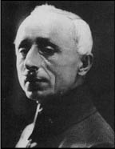

XXIII
Ansızın talih Mustafa Kemal’e bir kez daha güldü. Liman von Sanders’in de belirttiği gibi, büyük bir kumandanın en temel niteliğine sahipti: Talih ve yine talih. Büyük bir kumandanın ikinci önemli niteliği de vardı onda: Talihini yakalayıp kullanma yeteneği.
Padişah ve İngilizler, Anadolu’daki ilk direniş hareketlerinin bir an önce denetim altına alınması gerektiğine karar vermişlerdi. Padişah’ın temsilcisi olarak birinin gidip orduyu silahlarını bırakmaya birliklerini dağıtmaya ve yer yer harekete geçen yerel İttihat ve Terakki şubelerinin toplantılarını durdurmaya ikna etmek üzere durumu yerinde ele alması gerekiyordu.
Padişah Mustafa Kemal’i görevlendirmek istiyordu. İngiliz askeri yetkilileri buna karşı çıktılar. O, tehlikeli ve yetenekli biriydi. İskenderun konusundaki tutumunu unutmamışlardı. İngiliz Yüksek Komiseri de aynı fikirdeydi.
Ne var ki, Sadrazam Damat Ferit, ona kefil olmaya hazırdı. “Anadolu’daki tüm sorunların sebebi” diyordu, “hiçbir şekilde halkta kaynaklanan duygular değil, o mel’un İttihat ve Terakki Cemiyeti’nin, Enver’in habis çetesinin kurnazca çevirdiği dolaplardır. Türkler barış istemektedirler. Mustafa Kemal, cemiyetin sadece ismen üyesidir; gerçekte onun en kararlı muhalifi olarak tanınır. Ülke çapında büyük bir şöhreti vardır. Efendi bir adamdır. Kendisine güvenilebilir. Gönderilecek en uygun kişi odur.”
İngilizlerin onun hakkındaki kararı, tutuklanıp Malta’ya mı yoksa Padişah’ın temsilcisi olarak Anadolu’ya mı gönderileceği arasında günlerce gitti geldi. Sonunda Damat Ferit, İngilizleri ikna etti. Mustafa Kemal tutuklanacaklar listesinden çıkartıldı. Padişah’ın yaveri idi. Şimdi de Kuzey Bölgesi (9. Ordu) Umum Müfettişliği ile Doğu illeri Umum Valiliği’ne atanıyordu. İçinde bulunduğu tehlikenin farkında olmamakla birlikte, Mustafa Kemal öneriyi aldığı dakikada aradığı fırsatı yakaladığını fark etti. İçinde bulunduğu bunalımdan, yılanın deri değiştirmesi gibi kurtuldu; sağlığıyla birlikte eski canlılığına kavuştu. Amacını saklayarak ve Arif’inkinden başka kimsenin görüşlerine güvenmeksizin, Damat Ferit’in kendisine verdiği talimatı yürekten benimsemiş görünerek, plan yapmaya koyuldu. Padişah’ın temsilcisi olarak, Anadolu’daki Türkler arasında bir destek bulacağı kuşku götürmezdi. Onları İngilizlerden kurtarmak için gönderilmiş olduğunu söyleyerek direnişi örgütleyecekti; sonunda Türkiye’yi kurtarma fırsatı elindeydi.
Talimatnamesinin bir nüshasını alması, böylece daha geniş yetkiler elde etmesi sağlandı.1
Harbiye Nezareti’nde İsmet ve Fevzi’yle bir şifre hazırladılar ve ajanlar üzerinde karara vardılar.2
Bundan sonra hiç zaman kaybetmedi. Annesine veda etmek için Akaretler Caddesi’ndeki eve koştu. Zübeyde’nin gözleri neredeyse tamamen kör olmuştu. Yaşlı parmakları titreyerek oğlunun yüzünü okşadı, öptü, kendisinden her ayrılışında yaptığı gibi biraz ağladı ve onu dualarla uğurladı. Bu kez Zübeyde’ye bile tasarılarından ve umutlarından söz açmamıştı.3
Aynı akşam bir yolcu vapuruna bindi; artık Karadeniz sahiline gitmek için Boğaz’dan denize açılmaya hazırdı. Yanına Arif’i ve Üçüncü Kolordu Kumandanı olarak Sivas’a atanan Albay Refet’i almıştı.
Rauf onları yolcu etmek için vapura geldi ve Paris’teki Müttefik konferansında Yunanlıların İzmir’i işgal etmek üzere asker çıkarmasına yönelik bir karar aldıkları haberini verdi.4
Düşmanın Türkiye’yi ölüme mahkûm ettiği apaçık ortadaydı. Tek umut, düşmanla barış görüşmelerinde değil, direnmedeydi.
Aynı gün, gece yarısı Sadrazam, İngiliz Yüksek Komiserliği’nin temsilcisinden acil bir görüşme talebinde bulundu. Padişah’ın fikrini değiştirdiğini söyledi: Mustafa Kemal’in Anadolu’da mesele çıkarmak niyetinde olduğunu gösteren yeni bir ihbar alınmıştı. Mustafa Kemal ne pahasına olursa olsun durdurulmalıydı.
Onun hemen durdurulması ve geriye getirilmesi yolunda bir talimat gönderildi; ancak, Müttefik işgal örgütü son derece karmaşık uluslararası kıskançlıklar yüzünden delik deşik bir haldeydi. Yolcu gemilerini İngilizler, Fransızlar ve İtalyanların her biri ayrı ayrı denetlemekteydiler: Kara ve deniz kuvvetlerinin görevleri son derece belirsizdi. Emirler önce ertelendi ve sonunda bir kenarda unutuldu, Mustafa Kemal sadece birkaç saat farkla kurtulmuştu.
Bu yolculukta Mustafa Kemal hiç çekinmeden duygu ve düşüncelerini ortaya koydu. Hiç durmaksızın konuşuyor, görüşlerini, tutkularını, planlarını anlatıyor, içini döküyordu. Refet ise dinlemekteydi.

Albay Refet Bele
Refet, Mustafa Kemal’in tam zıddıydı. Şık, zarif bir süvari zabitiydi. Cesaretiyle büyük bir ün yapmıştı. Selanik Devrimi’nde Makedonya jandarmasına önderlik etmiş ve İngilizlere karşı Gazze’yi uzun bir kuşatma süresince başarıyla savunmuştu. Kısa boylu, çevik, her zaman iyi giyimli, pahalı deriden yapılmış çizmeleri her zaman parlak cilalı, üniforması iyi kesimliydi. Genellikle konuşurken başını oynatıp ellerini sallar, gözlerinin içi güler, bu haliyle küçük bir erkek çocuğunu andırırdı.
Ama bu defa oturmuş dinliyordu. Bu çaresiz serüvende Mustafa Kemal’in göz alıcı yeteneklerinin, bir önder olarak niteliklerinin farkına varmıştı. Yabancılara karşı direnişi örgütlemek konusundaki kararlılığında tamamen beraberdi onunla. Ama dinledikçe hepsinin ardında Mustafa Kemal’in bencilliğinin ve ne pahasına olursa olsun iktidarı eline geçirme konusundaki kararlılığının da farkına varıyordu. Mustafa Kemal’in yanında yer almaya karar verdi, ancak; onu her zaman gözünün önünde bulunduracaktı.
Zorlu bir yolculuğun ardından, 19 Mayıs 1919’da fırtınalı bir havada Karadeniz’in Samsun limanına çıktılar.
1 Atama kararında şu ifade yer almaktadır, “dokuzuncu Ordu Kıtaati Müfettişliği’ne ait vezaif yalnız askeri olmayıp, müfettişliğin ihtiva eylediği mıntıka dâhilinde aynı zamanda da mülkidir.” (a.b.ç) Mülki yetkilerinin Mustafa Kemal’in Erkan-ı Harbiye İkinci Reisi Kazım Paşa’dan bizzat istemiş ve elde etmiş olması nedeniyle vurgulanması gerekiyor.(ç.n.)
2 Mustafa Kemal, Harbiye Nezareti’nde İsmet’le değil, Fevzi ve onun yerine Erkân-ı Harbiye Reisliği’ne tayin olunan Cevat Paşa ile görüşmüştü. İzmir’e Yunanlıların çıkarılacağı haberinin alınmasından az sonra gerçeklesen bu görüşmede, Mustafa Kemal yeni reisten bazı taleplerde bulunmuş ve aralarında özel bir şifre kararlaştırmışlardı. (Atatürk’ün Hatıraları, s. 120). İsmet’le ise bundan birkaç gün evvel onun evinde görüşmüştü.(ç.n.)
3 Kentten ayrılmadan önce yaptığı işlerden biri de, Bekirağa Bölüğü’nde tutuklu arkadaşlarını ziyaret etmesinin yanı sıra Padişah’la da son bir görüşme yapmak olmuştu. (ç.n.)
4 Aslında, Rauf, Mustafa Kemal’i görmeye evine gitmiş, onun hareketine izin verilmeyeceği ya da vapurun batırılacağı haberini vermişti, İzmir’in işgalini Mustafa Kemal daha önce. Harbiye Nezareti’ndeki temasları sırasında Cevat ve Fevzi paşalardan öğrenmişti. (ç.n.)